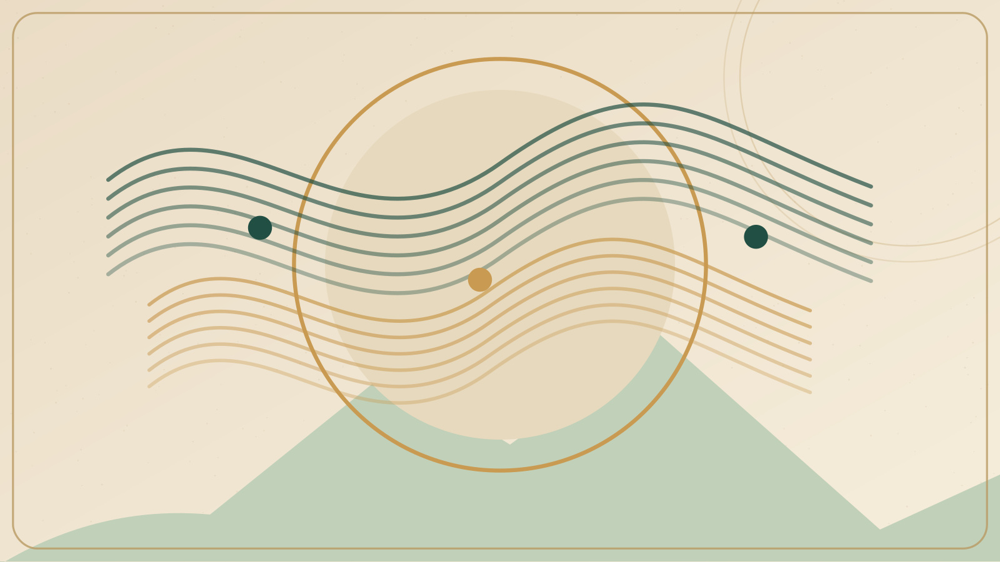

解讀經絡、穴位、手技與調理等詞彙的語境，避免把文化名詞誤當成醫療處方。
為何同一個詞會出現在不同文章？
經絡、穴位與手技常在東方文化、傳統醫學及民俗調理的討論中出現。不同場合使用同一個詞，目的可能不同。理解詞彙之前，應先辨識文章是文化介紹、醫療資訊還是生活服務說明。本篇只從文化與閱讀素養出發，不提供人體定位、操作步驟或疾病相關建議。
經絡是傳統理論的用語
在傳統中醫學的文獻中，經絡是重要的理論概念。博物館對《黃帝內經》的介紹能幫助讀者認識相關歷史背景。閱讀時可以將它放回古代知識的框架理解，而不宜僅憑名稱或古籍圖譜，就把它與某種現代解剖組織畫上等號。不同理論系統需要各自適切的證據。
穴位的名稱不等於可以自行操作
古籍中的穴位名稱具有其歷史背景，也出現在現代中醫專業領域。知道名詞如何出現，並不等於具備定位、診斷或施作的資格。本網站不將穴位名稱與特定疾病、身體功能改善或招攬服務連結，也不提供需要專業判斷的按壓位置、深度及時長。文化插圖並非人體位置圖。
手技是描述接觸方式的一個入口
相較於文化理論，手技介紹可以回到看得見的表現：接觸面、方向、是否連續、是否停留。這些觀察可以幫助讀者分辨四式品牌短片，但不能從視覺直接判定接受者的感受或身體反應。民俗調理服務的安排應尊重雙方溝通，而不是把一個傳統詞彙變成效果保證。
調理與醫療應有清楚界線
日常語言有時會使用調理一詞來描述生活安排，但在服務廣告中須注意是否暗示醫療業務。衛福部相關說明提醒非醫療機構不可宣傳疾病診治。對消費者來說，閱讀服務資訊時應先看清楚服務性質、內容與限制，遇到異常身體狀況則尋求合格醫療人員協助。
使用詞彙時先看完整句子
例如看到「循行」這個詞，先了解它是否出現在歷史理論、比喻性描述或醫療專業文獻中，而不要直接假設每個服務都有對應的生理作用。若網站介紹使用「節奏」或「接觸面」，則可詢問具體的接觸安排。兩種說法所指的內容不同，也不必互相套用。讀者可以先選擇自己看得懂的資訊，再逐步認識文化背景。若一段文字只使用大量術語卻沒有解釋目的與限制，保留問題並尋求清楚的說明，是很合理的閱讀習慣。
常見問題：看不懂術語也能詢問嗎？
當然可以。洽詢時不需要背熟經絡名稱，直接說明希望了解的服務、接受的接觸範圍、偏好的節奏及時間即可。若一個說法很難理解，可以請對方用平實的語言解釋。清楚的說明比堆疊專業名詞更能幫助雙方建立共識。
參考資料
立夫中醫藥博物館｜黃帝內經（文化及歷史背景）（查閱：2026-11-27）
衛生福利部｜民俗調理業者刊登廣告要注意（查閱：2026-11-27）
本文為一般生活與文化資訊，非個別醫療建議；尚待本人核定。服務項目、費用、時間及地點以洽詢確認為準。